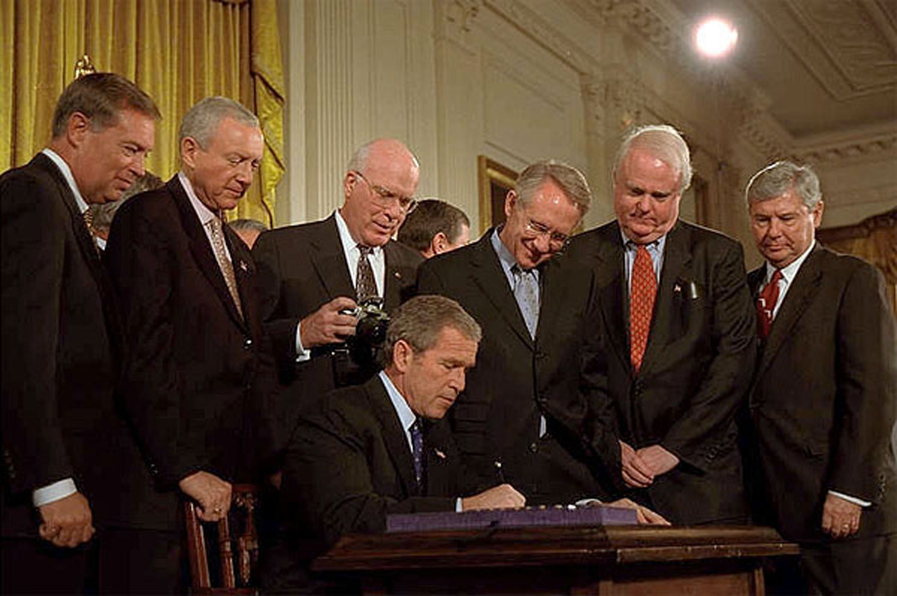
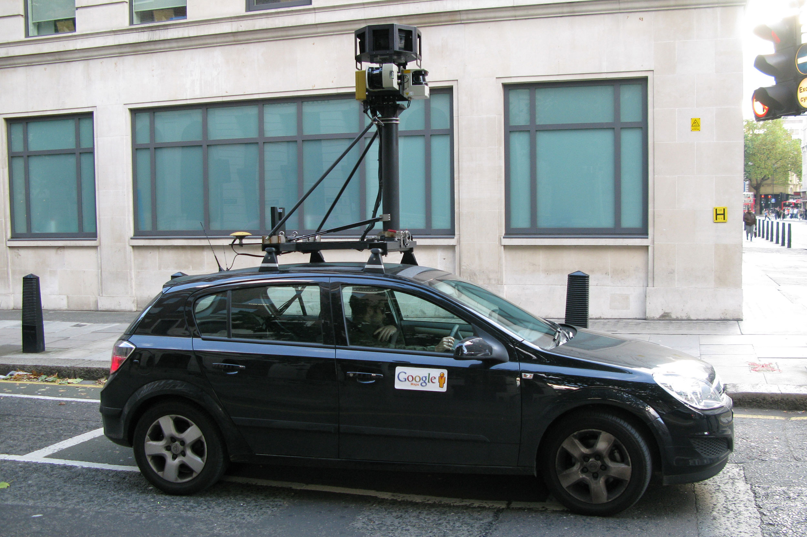

When a young waitress named Ashley was having a tough time at work, she decided to vent about her job on Facebook. The 22-year-old was working an overtime shift at a North Carolina pizza parlor and a demanding customer who had stayed late left a meager tip. Feeling frustrated, Ashley posted a short status update on her Facebook profile, calling the anonymous customer an unflattering name. Unfortunately for Ashley, her coworkers saw her post on the social networking site. Two days after her angry post, Ashley’s manager called her in to show her a copy of her comments and promptly fired her.Jodi Lai, “Waitress Gets Fired After Facebook Rant About Bad Tipper,” National Post (Don Mills, Toronto), May 17, 2010, http://news.nationalpost.com/2010/05/17/waitress-gets-fired-after-facebook-rant-about-bad-tipper/. Ashley’s story is one of many examples of employers terminating their employees because of inappropriate comments or photographs on social networking sites; a study by Internet security firm Proofpoint found that 8 percent of companies have dismissed an employee for his or her behavior on social networking sites.Adam Ostrow, “Facebook Fired: 8% of US Companies Have Sacked Social Media Miscreants,” Mashable (blog), August 10, 2009, http://mashable.com/2009/08/10/social-media-misuse/. These cases highlight a blurring of personal and professional life in the Internet age, leaving many people uncomfortable with the notion that their employer can monitor what they say or do in their free time and use it as a reason for dismissal.
Since the passing of the USA PATRIOT ActStatute passed in the wake of the September 11, 2001, terrorist attacks that allowed federal officials greater authority in tracking and intercepting communications., which as we have seen extended the government’s surveillance powers over communication devices, privacy has become a fiercely controversial issue in the United States, with supporters arguing the legal measures are necessary to prevent terrorist attacks, and opponents claiming that the act infringes on civil liberties. Privacy issues raised by the USA PATRIOT Act, combined with the growing problem of identity theft and increased monitoring in the workplace, make privacy a greater concern now than ever before.
Figure 16.5
President George W. Bush signs the USA PATRIOT Act.
As we saw in Chapter 14 "Ethics of Mass Media", the USA PATRIOT Act has generated a huge amount of debate and controversy since its approval by President George W. Bush in October 2001. Signed into law with little debate or congressional review just 43 days after the September 11 attacks, the act’s provisions enable the government, with permission from a special court, to obtain roving wiretaps over multiple communication devices, seize suspects’ records without their knowledge, monitor an individual’s web surfing and library records, and conduct surveillance on a person deemed to be suspicious but without known ties to a terrorist group. Approving the House of Representatives’ decision to renew 16 of the act’s provisions in 2005, President Bush said, “The [USA] PATRIOT Act is essential to fighting the war on terror and preventing our enemies from striking America again. In the war on terror, we cannot afford to be without this law for a single moment.”CNN, “Patriot Act’s Fate Remains Uncertain,” December 15, 2005, http://www.cnn.com/2005/POLITICS/12/14/patriot.act/.
However, not everyone agrees with the former president’s opinion. While proponents of the act cite the need to disrupt or prevent terrorist attacks, New York City Council member Bill Perkins, who sponsored a 2004 resolution condemning the law, says, “The [USA] PATRIOT Act is really unpatriotic, it undermines our civil rights and civil liberties. We never give up our rights, that’s what makes us Americans.”Michelle Garcia, “N.Y. City Council Passes Anti-Patriot Act Measure,” Washington Post, February 5, 2004, http://www.washingtonpost.com/wp-dyn/articles/A13970-2004Feb4.html. Opposition to the USA PATRIOT Act sparked a wave of protest across the United States. More than 330 communities in 41 states passed resolutions condemning the act.Timothy Egan, “State of the Union: Opposing the Patriot Act,” BBC News, September 13, 2004, http://news.bbc.co.uk/2/hi/programmes/3651542.stm. Librarians in Detroit reported that Muslim children had stopped checking out books on Islam out of fear they were being monitored, while librarians in New Jersey and California shredded records and computer sign-up sheets in an attempt to thwart the legislation. While citizens can protect against invasions of privacy on the Internet by limiting personal information and being careful about the information they share, the invasion of privacy through other lines of communication is more difficult to prevent. Despite fierce objections to the act, President Barack Obama signed an unamended 1-year extension of several key provisions of the PATRIOT Act (including the use of roving wire taps) in 2010. In the near future, politicians will have to decide whether citizen protection is worth the loss of liberties in the United States.
The privacy issue has strayed well beyond government legislation; it affects anyone who is currently employed or even just looking for a job. When employers consider whether or not to hire an individual, they no longer need to rely on just a résumé to obtain pertinent information. A simple Google search often reveals that a potential employee has a social networking site on the Internet, and unless privacy settings have been put in place, the employer can access everything the candidate has posted online. A 2010 survey by CareerBuilder.com revealed that 53 percent of companies check out candidates’ profiles on social networking sites such as MySpace, Twitter, LinkedIn, and Facebook before deciding to employ them, and a further 12 percent of companies intend to review social networking sites of potential employees in the future.Carrie-Ann Skinner, “Job Seekers, Watch Your Walls – Employers Check Facebook,” PC World, January 17, 2010, http://www.pcworld.com/article/186989/job_seekers_watch_your_walls_employers_check_facebook.html. Factors that affect an employer’s decision whether or not to hire candidates based on their social networking page include the use of drugs or drinking, the posting of discriminatory comments, or the posting of photographs deemed to be inappropriate or provocative. The survey also revealed that some candidates posted information on their social networking page that proved they had lied on their résumé.Carrie-Ann Skinner, “Job Seekers, Watch Your Walls – Employers Check Facebook,” PC World, January 17, 2010, http://www.pcworld.com/article/186989/job_seekers_watch_your_walls_employers_check_facebook.html.
As we have seen, once employees are hired, they still need to be careful about what they post on social networking sites, particularly in relation to their jobs. Cheryl James, a hospital worker from Michigan, was fired in 2010 after she posted a message on Facebook describing a patient as a “cop killer” and hoping that he would “rot in hell.”Ronnie Dahl, “Oakwood Hospital Employee Fired for Facebook Posting,” MyFOXDetroit.com, July 30, 2010, http://www.myfoxdetroit.com/dpp/news/local/oakwood-hospital-employee-fired-for-facebook-posting-20100730-wpms. A few years earlier, Virgin Atlantic Airlines terminated 13 crew members for describing passengers as “chavs” (a derogatory British term similar to “white trash”). A Virgin spokesman commented, “There is a time and a place for Facebook. But there is no justification for it to be used as a sounding board for staff of any company to criticize the very passengers who pay their salaries.”Lawrence Conway, “Virgin Atlantic Sacks 13 Staff for Calling its Flyers ‘Chavs’,” Independent (London), November 1, 2008, http://www.independent.co.uk/news/uk/home-news/virgin-atlantic-sacks-13-staff-for-calling-its-flyers-chavs-982192.html.
Although employees might reasonably expect to be disciplined for using social networking sites on company time—a 2009 study discovered that 54 percent of U.S. companies have banned workers from using social networks during work hours—the issue of whether companies can influence how their employees behave in their private lives is a little trickier.Sharon Gaudin, “Study: 54% of Companies Ban Facebook, Twitter at Work,” Computerworld, October 6, 2009, http://www.computerworld.com/s/article/9139020/Study_54_of_companies_ban_Facebook_Twitter_at_work. The outcome of a 2009 federal court case in New Jersey may have some bearing on whether companies have the right to spy on their employees while the employees are on password-protected sites using non–work computers. The case, between restaurant employees Brian Pietrylo and Doreen Marino and managers at Houston’s in Hackensack, New Jersey, centered on a forum set up by Pietrylo on MySpace. The forum, which was password-protected and required an email invitation to join, made fun of the restaurant décor and patrons and included sexual jokes and negative comments about restaurant supervisors. Restaurant hostess Karen St. Jean, who had received an invitation to the forum, showed the supervisors the site and believed they found it amusing; however, the information was passed further up the management chain, and Pietrylo and Marino were fired. The restaurant claimed that the pair’s online posts violated policies set out in the employee handbook, including professionalism and a positive attitude. Marino and Pietrylo filed for unfair dismissal, claiming that the restaurant managers had violated their privacy under New Jersey law. Following a trial in June 2009, a federal jury agreed that the restaurant had violated state and federal laws that protect the privacy of web communications. The jury awarded Pietrylo and Marino a total of $3,400 in back pay and $13,600 in punitive damages.Charles Toutant, “Restaurateurs Invade Waiters’ MySpace,” New Jersey Law Journal, June 19, 2009, http://www.law.com/jsp/lawtechnologynews/PubArticleLTN.jsp?id=1202431575049.
Although the outcome of the New Jersey case may have some bearing on the use of social networking sites outside of work, employees should still exercise caution in the office. Companies are increasingly using technological advances to monitor Internet usage, track employees’ whereabouts through GPS-enabled cell phones, and even film employees’ movements via webcam or miniature video cameras. Lewis Maltby, author of workplace rights book Can They Do That?, says, “There are two trends driving the increase in monitoring. One is financial pressure. Everyone is trying to get leaner and meaner, and monitoring is one way to do it. The other reason is that it’s easier than ever. It used to be difficult and expensive to monitor employees, and now, it’s easy and cheap.”Laura Petrecca, “More Employers Use Tech to Track Workers,” USA Today, March 17, 2010, http://www.usatoday.com/money/workplace/2010-03-17-workplaceprivacy15_CV_N.htm. Whereas employees using their own equipment outside of work hours might have a reasonable expectation of privacy, the situation changes when using company property. Nancy Flynn, founder of training and consulting firm ePolicy Institute, said, “Federal law gives employers the legal right to monitor all computer activity. The computer system is the property of the employer, and the employee has absolutely no reasonable expectations of privacy when using that system.”Laura Petrecca, “More Employers Use Tech to Track Workers,” USA Today, March 17, 2010, http://www.usatoday.com/money/workplace/2010-03-17-workplaceprivacy15_CV_N.htm. Because this lack of privacy covers everything from instant messages sent to coworkers to emails sent from personal accounts when employees are logged onto the company network, the prudent action for employees to take is to separate their work life from their personal life as much as possible.
Social networking sites have come under fire in recent years for violating users’ privacy. In 2009, Facebook simplified its settings to keep up with the popularity of microblogging sites such as Twitter. One consequence of this action was that the default setting enabled status updates and photos to be seen across the entire Internet (see Chapter 11 "The Internet and Social Media" for more information about Facebook privacy settings). The social networking site has also come under criticism for a temporary glitch that gave users unintended access to their friends’ private instant messages, and for a new feature in 2010 that enabled the company to share private information with third-party websites. Although Facebook simplified its controls for sharing information by consolidating them on a single page and making it easier for users to opt out of sharing information with third-party applications, public concern prompted 14 privacy groups to file an unfair-trade complaint with the Federal Trade Commission (FTC) in May 2010.Warwick Ashford, “Facebook Stands Up to Privacy Coalition,” ComputerWeekly, June 21, 2010, http://www.computerweekly.com/Articles/2010/06/21/241663/Facebook-stands-up-to-privacy-coalition.htm. Congress is currently investigating whether more government regulation of social networking sites is necessary to protect people’s privacy.
Figure 16.6
Google Street View cars breached privacy by inadvertently collecting private communications data from unsecured Wi-Fi networks.
Other companies, including Google, are actively attempting to restore users’ privacy. In response to revelations that the company had accidentally captured and archived wireless data with its Google Street View cars (which are equipped with cameras to provide panoramic views along many streets around the world), Google announced in 2010 that it was launching an encrypted search facility. The technology uses SSLA protocol for managing the security of message transmission on the Internet. (secure sockets layer) to protect Internet searches from being intercepted while traveling across the web. Users can activate the secure search facility by typing “https” at the beginning of the URL instead of “http.” Although the technology provides a measure of security—the search will not be archived in the computer’s history or appear in the AutoFill during a subsequent search—it is not entirely private. Google maintains a record of what people search for, and Internet users will still need to rely on the company’s promise not to abuse the data. However, if the encrypted search facility proves successful, it may become a role model for social networking sites, which could offer encryption for more than just log-ins.
Visit the website located at http://www.eff.org/wp/effs-top-12-ways-protect-your-online-privacy. Read through the 12 tips and use them to evaluate your security on the Internet. How many of the tips do you already follow? What can you do to protect your privacy further? Keep these answers in mind as you respond to the following short-answer questions. Each response should be a minimum of one paragraph.